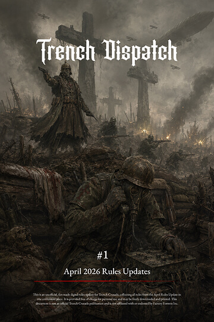

Download Trench Dispatch #1If you like this, you can buy me a trench coffee. It’ll give me some extra energy and motivation to keep creating more stuff like this in the future. I’d really appreciate your support!
This is an unofficial, fan-made collection of the latest Trench Crusade rules updates, gathered in one place to make them easier to find, read, and use during play. It is provided free of charge for personal use and printing. This document is not an official publication, rules modification, or replacement for the official Trench Crusade rulebooks, and is not affiliated with or endorsed by Factory Fortress Inc.
If you notice an error or have any suggestions, feel free to let me know:
proyectpanda@gmail.com